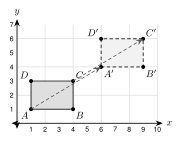
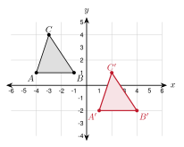
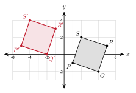
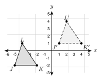
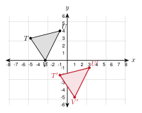
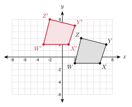

3.1 - Translations
Open a floor plan on a screen. Drag a desk to a new spot. The whole desk slides. It does not turn. It does not change size.

Every corner of the desk moves the same way. Here each corner moves 5 units right and 3 units up. In this lesson you write that move as a rule. Then you use the rule on the coordinate plane.
Printable Guided Notes for this lesson (fill-in notes to print and write on)
🔥 Warm Up
Plot \(A(1, 2)\) and \(B(5, 5)\) on a coordinate plane. Find the distance \(AB\).
Find the slope of the line through \(A(1, 2)\) and \(B(5, 5)\).
Solve \(-2 + a = 4\).
👥 Learn Together
3.1.1 - Moving a Figure
A transformation moves a figure, or changes its size, by a rule. A translation is the simplest one. It slides the whole figure.
- The starting figure is the preimage. The new figure is the image.
- The image of point \(A\) is \(A'\). Read it as “A prime”.
- A translation slides every point the same distance in the same direction.
Example 1: Preimage and image
The desk \(ABCD\) slides to \(A'B'C'D'\) (see the figure).
Name the image of \(C\). \(C'\)
\(A\) is at \((1, 1)\) and \(A'\) is at \((6, 4)\). How far did \(A\) move? 5 right and 3 up
\(D\) is at \((1, 3)\). Where is \(D'\)? \((6, 6)\). Every point moves the same way.
Name the preimage of \(B'\).
\(C\) is at \((4, 3)\). Where is \(C'\)?
\(B\)
\((9, 6)\)
3.1.2 - Translation Rules
Moving 5 right and 3 up adds 5 to every \(x\) and 3 to every \(y\). We write that as a rule:
\[(x, y) \rightarrow (x + 5, y + 3)\]
- The rule \((x, y) \rightarrow (x + a, y + b)\) slides a figure.
- If \(a\) is positive, move right. If \(a\) is negative, move left.
- If \(b\) is positive, move up. If \(b\) is negative, move down.
| Move | Rule |
|---|---|
| 3 right | \((x + 3, y)\) |
| 5 down | \((x, y - 5)\) |
| 2 left and 6 up | \((x - 2, y + 6)\) |
| 7 right and 1 down | \((x + 7, y - 1)\) |
Example 2: Use a rule
Apply \((x, y) \rightarrow (x - 3, y + 5)\) to \(P(2, -4)\).
\(x\): \(2 - 3 = -1\)
\(y\): \(-4 + 5 = 1\)
\(P' = (-1, 1)\)
Example 3: Find the rule
\(A(-2, 3)\) moves to \(A'(4, -1)\). Write the rule.
Change in \(x\): \(4 - (-2) = 6\)
Change in \(y\): \(-1 - 3 = -4\)
Rule: \((x, y) \rightarrow (x + 6, y - 4)\)
In words: 6 right and 4 down.
To find the change, always do image minus preimage. If you subtract the other way, you get the wrong direction.
Apply \((x, y) \rightarrow (x + 7, y - 2)\) to \(Q(-5, -3)\).
\(B(1, -6)\) moves to \(B'(-3, 0)\). Write the rule and say it in words.
\(Q' = (2, -5)\)
\(-3 - 1 = -4\) and \(0 - (-6) = 6\). Rule: \((x - 4, y + 6)\). 4 left and 6 up.
3.1.3 - Graphing the Image
To graph the image of a figure, move each vertex with the rule. Then connect the new points in the same order.
- Step 1: Apply the rule to every vertex.
- Step 2: Plot the new points and label them \(A'\), \(B'\), \(C'\).
- Step 3: Connect them in the same order as the preimage.
Example 4: Translate a triangle

Graph the image of \(\triangle ABC\) with \(A(-4, 1)\), \(B(-1, 1)\), \(C(-3, 4)\) under \((x, y) \rightarrow (x + 5, y - 3)\).
\(A' = (-4 + 5, 1 - 3) = (1, -2)\)
\(B' = (-1 + 5, 1 - 3) = (4, -2)\)
\(C' = (-3 + 5, 4 - 3) = (2, 1)\)
Example 5: Translate a quadrilateral

Graph the image of \(PQRS\) with \(P(1, -1)\), \(Q(4, -2)\), \(R(5, 1)\), \(S(2, 2)\) under \((x, y) \rightarrow (x - 6, y + 2)\).
\(P' = (-5, 1)\), \(Q' = (-2, 0)\)
\(R' = (-1, 3)\), \(S' = (-4, 4)\)
\(J'(1, 2)\), \(K'(4, 1)\), \(L'(3, 5)\)
A game screen is a coordinate plane. A character that steps 1 right and 2 up uses the rule \((x, y) \rightarrow (x + 1, y + 2)\). A chess knight that jumps 2 squares right and 1 up uses \((x + 2, y + 1)\).
3.1.4 - What Stays the Same
A translation slides a figure. It does not stretch it or turn it. We can check this with the tools from Unit 2.
- A translation keeps every side length and every angle the same.
- Each side is parallel to its image. (They have the same slope.)
- A transformation that keeps lengths and angles is a rigid motion. A translation is a rigid motion.
Example 6: Check with coordinates
In the first triangle example, \(A(-4, 1)\) and \(C(-3, 4)\) move to \(A'(1, -2)\) and \(C'(2, 1)\). Compare \(\overline{AC}\) and \(\overline{A'C'}\).
Length of \(\overline{AC}\): \(\sqrt{1^2 + 3^2} = \sqrt{10}\)
Length of \(\overline{A'C'}\): \(\sqrt{1^2 + 3^2} = \sqrt{10}\)
Slope of \(\overline{AC}\): \(\dfrac{4 - 1}{-3 - (-4)} = 3\)
Slope of \(\overline{A'C'}\): \(\dfrac{1 - (-2)}{2 - 1} = 3\)
The lengths are equal and the slopes are equal. So \(\overline{AC} \cong \overline{A'C'}\) and \(\overline{AC} \parallel \overline{A'C'}\).
\(XY = \sqrt{36 + 64} = 10\) and \(X'Y' = \sqrt{36 + 64} = 10\). Both slopes are \(\dfrac{8}{6} = \dfrac{4}{3}\).
✍️ Practice On Your Own
Use the figure for problems 1 to 4.

Name the image of \(K\).
Name the preimage of \(L'\).
How far does every point move?
Write the translation rule.
Apply the rule to the point.
\((x, y) \rightarrow (x + 4, y + 1)\) to \((2, 3)\).
\((x, y) \rightarrow (x - 5, y + 0)\) to \((1, -2)\).
\((x, y) \rightarrow (x + 0, y - 6)\) to \((-3, 4)\).
\((x, y) \rightarrow (x - 2, y - 7)\) to \((-1, -1)\).
\((x, y) \rightarrow (x + 9, y - 4)\) to \((-6, 0)\).
\((x, y) \rightarrow (x - 3, y + 8)\) to \((4, -8)\).
Write the rule that moves \(A\) to \(A'\). Then say it in words.
\(A(2, 5) \rightarrow A'(7, 3)\)
\(A(-4, -1) \rightarrow A'(-1, -6)\)
\(A(0, 6) \rightarrow A'(-8, 2)\)
\(A(3, -3) \rightarrow A'(3, 4)\)
Graph the image. Give its coordinates.

- Use \((x, y) \rightarrow (x + 4, y - 5)\) on \(\triangle TUV\).
Graph the image. Give its coordinates.

- Use \((x, y) \rightarrow (x - 5, y + 3)\) on \(WXYZ\).
Graph the image on your own grid.
- Triangle \(MNO\) has \(M(1, -4)\), \(N(5, -3)\), \(O(2, -1)\). Use \((x, y) \rightarrow (x - 3, y + 6)\). Give the image coordinates.
Check with distance and slope.
\(A(1, 2)\) and \(B(4, 6)\) move to \(A'(6, 0)\) and \(B'(9, 4)\). Show \(AB = A'B'\) and that the slopes are equal.
A translation maps \(\triangle XYZ\) to \(\triangle X'Y'Z'\). \(XY = 13\) and \(m\angle Y = 72^\circ\). Find \(X'Y'\) and \(m\angle Y'\).
Amira says the triangle with \((0, 0)\), \((4, 0)\), \((0, 3)\) was translated to the triangle with \((5, 1)\), \((9, 1)\), \((5, 5)\) because it looks the same. Is she right? Use lengths to decide.
Solve for the unknown.
The point \((2k, k + 1)\) is moved by \((x, y) \rightarrow (x + 3, y - 2)\) to \((11, 3)\). Find \(k\).
The image of \(P(x, 3)\) under \((x, y) \rightarrow (x - 5, y + 2)\) is \(P'(4, 5)\). Find \(x\).
Real problems.
On a floor plan, each unit is 1 foot. A table has corners \((2, 1)\), \((6, 1)\), \((6, 4)\), \((2, 4)\). It moves 7 feet right and 3 feet up. Give the new corners and the area before and after.
A game character is at \((3, 3)\). Each move uses \((x, y) \rightarrow (x + 2, y + 1)\). Where is the character after 4 moves?
Hnin moves a game piece with \((x, y) \rightarrow (x + 2, y - 1)\) three times in a row. Write one rule for all three moves.
Find the mistake.
- Diego applies \((x, y) \rightarrow (x - 4, y + 1)\) to \((3, -2)\) and gets \((7, -1)\). What did he do wrong? What is the correct image?
Test practice
The point \(P(-3, 5)\) is translated by the rule \((x, y) \rightarrow (x + 6, y - 8)\). What are the coordinates of \(P'\)?
A. \((3, -3)\)
B. \((-9, 13)\)
C. \((3, 13)\)
D. \((-9, -3)\)Quadrilateral \(WXYZ\) is translated to form quadrilateral \(W'X'Y'Z'\). \(WX = 8\) cm and \(m\angle X = 105^\circ\). Which statement must be true?
A. \(W'X' = 8\) cm and \(m\angle X' = 105^\circ\)
B. \(W'X' > 8\) cm and \(m\angle X' = 105^\circ\)
C. \(W'X' = 8\) cm and \(m\angle X' = 75^\circ\)
D. \(W'X' = 8\) cm and \(m\angle X'\) cannot be found
Challenge
- A translation maps \(A(2, 5)\) to \(A'(-1, 9)\). The same translation maps \(B(-3, k)\) to \(B'(m, 1)\). Find \(m\) and \(k\).